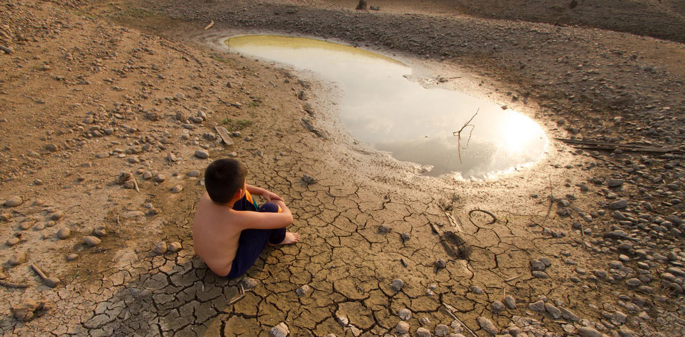

Atras
ESCASEZ DEL AGUA
La crisis del agua en la ciudad hispanohablante más poblada del mundo lleva décadas,
tantas que Pinzón a sus 45 años recuerda problemas con el agua desde hace 20 años

A los problemas estructurales en el suministro, la desigualdad en el acceso, las fugas
y la contaminación se han sumado nuevos récords de temperaturas máximas y una sequía que se ha
extendido durante los últimos tres años y que golpea a todo el país. En Ciudad de México suele
llover tanto o más que en Londres, pero se recicla apenas el 15% del agua
C
U
I
D
A
E
L
A
G
U
A